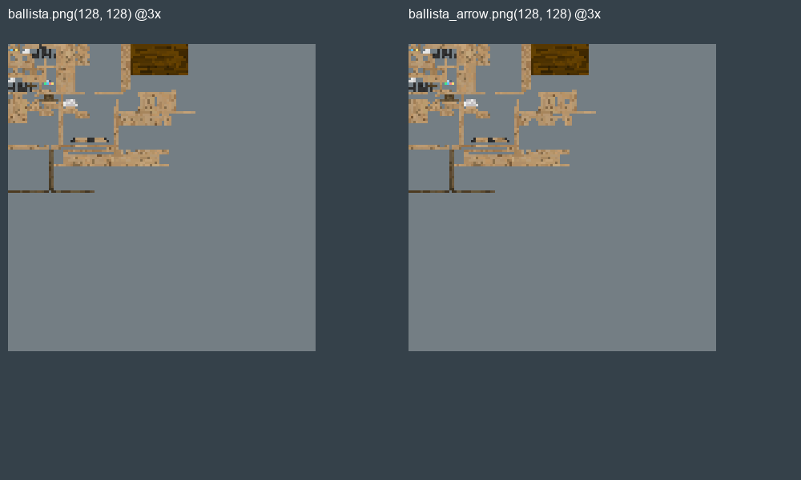
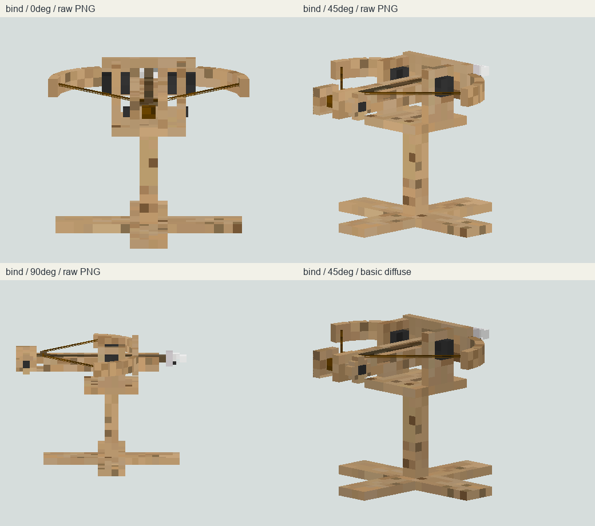
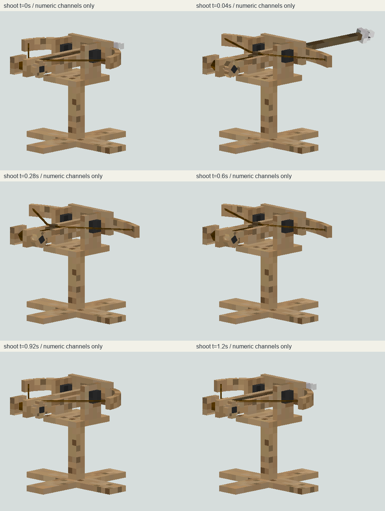
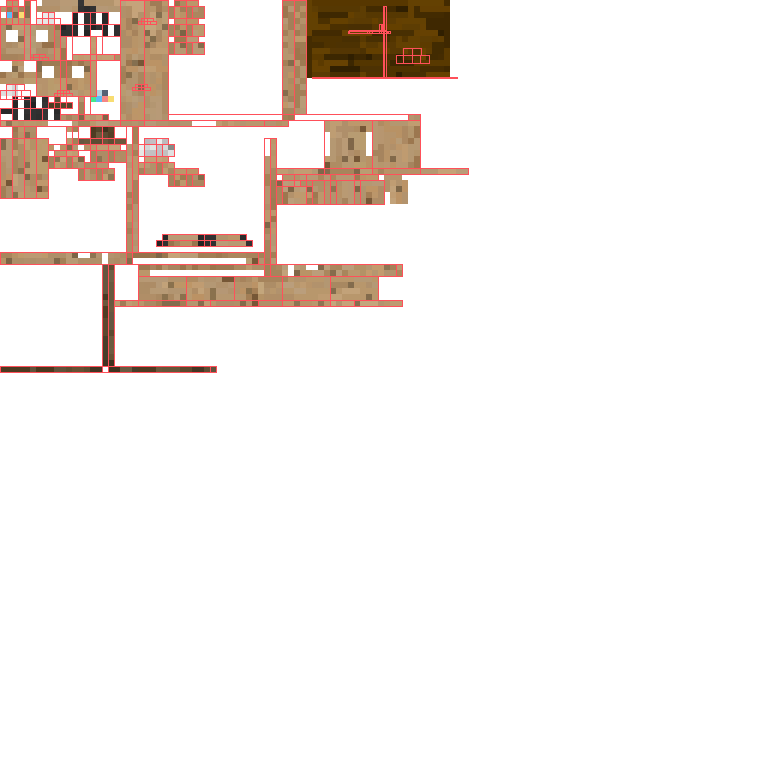

tag v1.0.2-beta-1.19.2→f2051aa；MC1.19.2、Fabric0.66.0、loader0.14.10、Gecko3.1.6、Java17。固定LICENSE头LGPL2.1，fabric元数据写CC0，当前网页写MIT。
本轮仅研究，不据冲突元数据认定美术可复用；不兼容当前Forge1.20.1。gradle.properties:1 build.gradle:1 fabric.mod.json:1 LICENSE:1
固定 f2051aa45839285df20d7011040164666326a059 · Fabric1.19.2 / Gecko3.1.6 跨版本研究，不是Forge1.20.1兼容实现。1项本地源码研究待复核，新增验收0；未修改生产资源、未启动Java/游戏。
作者发布页 · 12项源码证据 · 逐文件阅读范围/哈希 · 调用扫描 · 局部校验
tag v1.0.2-beta-1.19.2→f2051aa；MC1.19.2、Fabric0.66.0、loader0.14.10、Gecko3.1.6、Java17。固定LICENSE头LGPL2.1，fabric元数据写CC0，当前网页写MIT。
本轮仅研究，不据冲突元数据认定美术可复用；不兼容当前Forge1.20.1。gradle.properties:1 build.gradle:1 fabric.mod.json:1 LICENSE:1
dm:ballista 和 dm:ballista_arrow 分别注册.875²与.125²尺寸；BALLISTA物品指向该实体，client入口注册对应Geo renderer。
实体尺寸、可见边界与实际渲染尺度分开；不是当前Dynasty新实体。ModEntities.java:30 ModEntities.java:57 ModItems.java:33 ModItems.java:70 DefensiveMeasuresClient.java:9 ModEntityRenderers.java:20
TurretItem仅服务器spawnFromItemStack成功后decrement1；空碰撞原位否则朝点击面偏移；EntityTag.id可覆盖默认实体类型。
原生spawnFromItemStack1.19.2未闭合，不从本段推断整个NBT恢复正确。TurretItem.java:37 TurretItem.java:78 BallistaTurretItem.java:9
Ballista实际注册原生ProjectileAttackGoal，interval50tick，range16.8125；Monster目标优先、另有队伍条件目标。自定义ShootProjectileGoal全Java扫描仅声明文件出现，未发现注册。
精确原生goal计时与攻击事件顺序待同版本消费者；不能把unused自定义goal当运行实现。BallistaTurretEntity.java:48 BallistaTurretEntity.java:104 TargetOtherTeamGoal.java:11
attack设置shooting，空目标返回；new BallistaArrowEntity(world,this)，速度1.5、水平差×1.0625、垂向加平距×.2，出生y+.8125。选定attack未查询弹药栈，注册ballista_arrow物品不等于发射会消耗它。
不推定其他版本或扩展配置；没有实测弹道。getBodyY(2/3)、跟踪目标getBodyY(1/2)实参都为0；本地attCooldown仅按有目标递减/复位，并在<=45时复位shooting；不能把它当原生goal唯一开火时钟。
记录Java整数算术，不修改作者或Dynasty玩法，不宣称实机命中偏移量。发射构造调用父类(owner,world)，owner为炮塔，非放置玩家；构造和onHit/onEntityHit都设置pierce5。asItemStack返回null。
原生1.19.2伤害、穿透列表/拾取和NBT未闭合；不把5直接解释为实测五目标上限，不称玩家击杀归属。BallistaArrowEntity.java:22 BallistaArrowEntity.java:54 BallistaArrowEntity.java:82
createSpawnPacket走命名C2S类的send，但真实返回S2C：type/UUID/entityID/pos/byte角/float角。client仅读取byte角，创建实体位置角度IDUUID，未读取尾部float，也没设置owner或delta。
类名不能决定方向；后续原生追踪包是否补速度/owner待同版本消费者，不宣称必定静止。BallistaArrowEntity.java:87 ModPackets.java:17 SpawnEventC2SPacket.java:33 SpawnEventS2CPacket.java:22
tryItem复制健康/NoAI等与Level/FromItem至item根NBT；创造非潜行直接discard。普通回收生成掉落并discard。copyDataFromNbt在全Java扫描只有声明/定义/自身静态调用，未发现放置调用。
不能声称完整往返恢复；EntityTag原生读取仍需同版本验证；没有玩家owner字段。Itemable.java:42 Itemable.java:88 TurretEntity.java:613 TurretEntity.java:698 TurretItem.java:54
四控制器setup/look/death/firing；firing在hasTarget+shooting播放shoot、markNeedsReload并复位shooting。shoot文件1.24s，箭.08s隐藏、1.2s显现，弓臂/弦/推杆/滑轮独立。
源码标志与动画不等于服务器接触帧，未运行Gecko3混合；死亡控制器STOP行为待消费。BallistaTurretEntity.java:73 BallistaTurretEntity.java:145 ballista.animation.json:1
Java模型把degree转radian，再和±25比较并+.125；JSON look_at_target也给head/bow写query旋转。base清零，实体tick还将bodyYaw/yaw归零。
不直接断言最终双重旋转，需Gecko控制器后续应用顺序；不照搬混用单位。BallistaTurretModel.java:31 BallistaTurretEntity.java:189 ballista.animation.json:11
renderer实际PNG128²与geo声明一致，炮塔额外缩放.8125；箭renderer blocklight15、entityTranslucent。弩炮原图大面积暖木块、局部深色机构与浅色箭头，未只看README。
箭亮不是PNG自身PBR；木纹斑点可读但不作为Dynasty随机噪点模板。BallistaTurretModel.java:16 BallistaTurretRenderer.java:22 BallistaArrowRenderer.java:25 ballista.geo.json:1
逐面读取真实128²PNG，标准box UV与数值线性骨骼变换近似；不执行Gecko控制器/query，不是游戏截图。没有复制资源到Dynasty。
actual-entity-pngs.png

ballista-bind-software.png

shoot-numeric-frames.png

uv-ballista.png

43个Cuboid、21骨骼、2张实体PNG、各动作帧和部件物品，全部属于同一弩炮家族，不拆成独立参考。许可信息冲突，只作研究，不复用作者美术。
后续核对：精确Gecko3.1.6消费者发现box UV取整、镜像与轴转换规则；以上软件图仅近似，不是加载器一致性或实机证明。